Definimos a arquitetura e os contratos, e usamos IA para acelerar a implementação do protótipo ao deploy — sempre com revisão humana e código tipado. O SignallQ é a prova: um app de diagnóstico de conectividade modular, do zero ao lançamento.

A maioria dos apps de rede mostra número. O SignallQ mostra veredito. Um núcleo de medição nativo coleta sinal, throughput e estabilidade; um modelo na borda (Cloudflare AI) interpreta as métricas e gera um laudo em linguagem natural — dizendo não só "como está", mas "o que fazer e de quem é o problema".
A diferença não é medir. É traduzir. RSSI, Mbps e uptime viram "seu Wi-Fi está longe do roteador" ou "o problema está na rede, não no seu equipamento".
O SignallQ é dividido em 15 módulos independentes: um núcleo de medição compartilhado (rede, telefonia, persistência) e features isoladas. As features não dependem umas das outras — o produto pode ser recomposto, reembalado ou white-labeled sem reescrever o motor.
Mesma base técnica, múltiplos produtos possíveis. É isso que torna o próximo passo viável.
97% dos provedores de internet do Brasil têm menos de 10 mil clientes — e quase todos perdem dinheiro no call center com chamados que o próprio cliente poderia resolver. A direção do SignallQ é virar uma camada white-label para esses provedores: o cliente do ISP auto-diagnostica, resolve sozinho o que é do lado dele, e o que sobra chega ao suporte já pré-diagnosticado. Menos chamado N1, atendimento mais rápido, cliente menos frustrado.
A 7Agents é um estúdio de software AI-first. Definimos a arquitetura e os contratos e deixamos a IA acelerar a implementação — desenvolvimento assistido do protótipo ao deploy, sempre com revisão humana e tipagem forte.
Cada produto nasce de uma decisão de arquitetura, não de uma tela. Stack enxuta, código tipado e fronteiras claras entre domínio, dados e interface — menos camadas, mais previsibilidade.
“IA em primeiro lugar — do primeiro prompt ao produto em produção.”